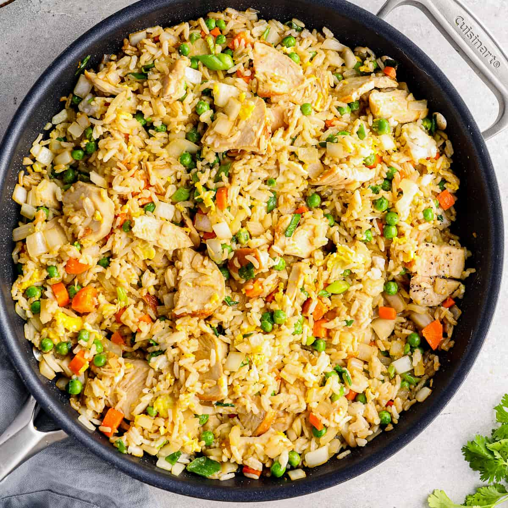

Chicken Fried Rice

Credit:
Easy Chicken Recipes
Description
When you need a meal to feed the entire family and are short on time and groceries, try this easy, one-pan fried rice dish made with with leftover chicken and rice. A handful of veggies add color and texture while a few pantry staple spices and condiments add flavor to this simple stir-fry dish the whole family will love.
Ingredients
- 2 cups cooked white rice
- 3 tablespoons plus 1 teaspoon canola or vegetable oil
- 1 boneless skinless chicken breast
- 1 small yellow onion
- 1 medium carrot
- 3 scallions
- 2 medium cloves garlic
- 3 teaspoons low sodium soy sauce
- 2 teaaspons toasted sesame oil
- Kosher salt & fresly ground black pepper
- 1 tabesppoon mirin
- 1 cup frozen aby peas
- 2 large eggs
Steps
- Cook the rice according to package directions – after cooking, pour it on a plate and set aside to cool completely. Once the rice has cooled completely, break it up with your hands into individual grains.
- Heat 1-tablespoon oil in a 12-inch nonstick skillet (or wok), over high heat, until smoking. Add the rice, cook and stir 3-4 minutes or until the rice just begins to turn a little darker. Transfer the rice to a small bowl and set aside.
- Turn heat to medium, heat 1-tablespoon of oil and place the chicken breast in the skillet. Cook 3 minutes on each side. Transfer the chicken to a cutting board, cut into very thin slices and then cut the slices into thirds.
- Heat 1-tablespoon oil in the skillet and add the diced onion, carrot, scallions and garlic. Cook, stirring continuously, 2-3 minutes or until carrots are just lightly tender and onions are translucent.
- Add the rice and peas and stir to combine.
- Add the cooked chicken, soy sauce, sesame oil and mirin, stir and cook another 2 minutes.
- Season to taste with kosher salt and freshly ground black pepper.
- Push the chicken rice mixture to the sides of the skillet and add 1-teaspoon oil to the middle of the skillet.
- Add the lightly beaten eggs and season with salt & pepper. Scramble the eggs and stir to combine with the chicken/rice mixture.Top hot cinnamon rolls with cream cheese frosting.
- Cook, stirring continuously, 3-4 minutes, to give time for the flavors to meld.
- Serve immediately and enjoy!